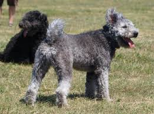
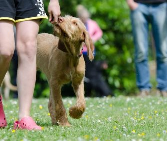
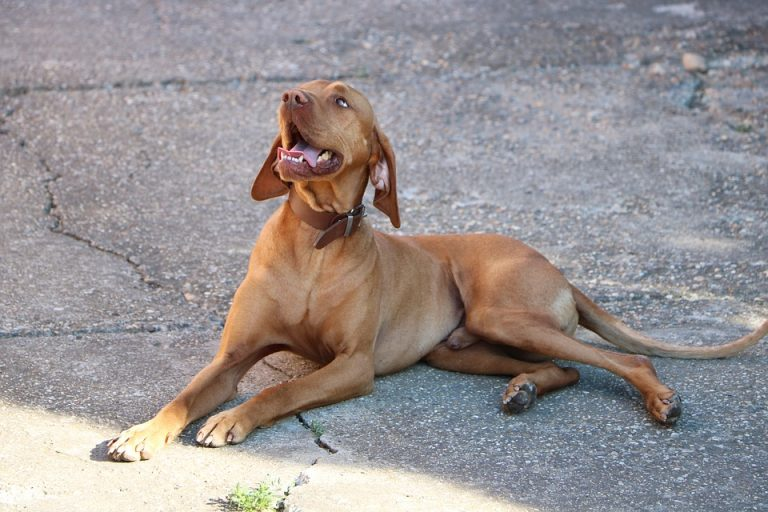
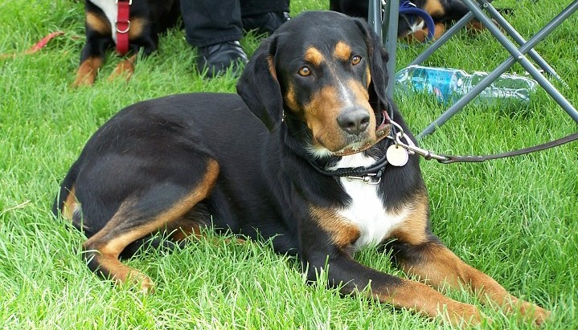
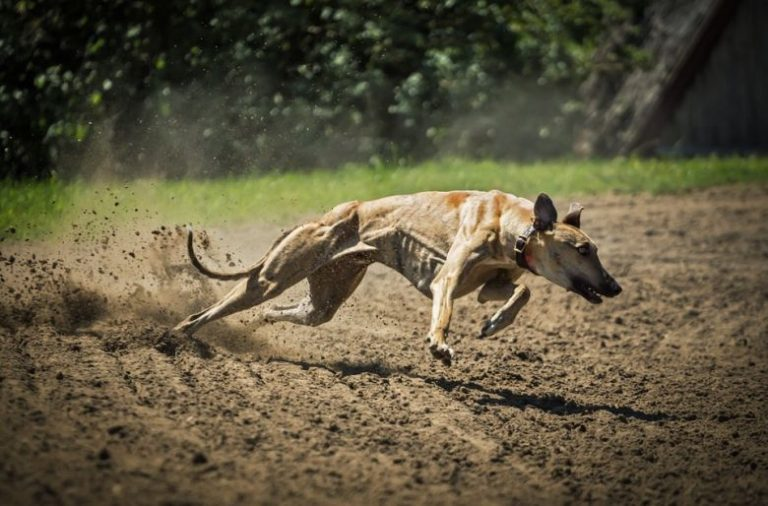
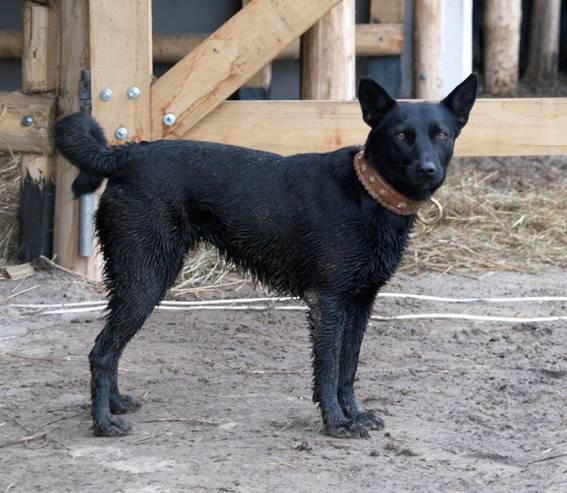

KUTYAFAJTÁK
PULI

Ha magyar kutyafajták kerülnek szóba, nem is kérdéses, hogy a pulit említik az elsők között. Világszerte ez a legismertebb magyar terelőkutya. Ha elfogultak vagyunk, akkor elmondhatjuk, hogy világviszonylatban ma sem nagyon találni nála intelligensebbet.
A harapósság nem jellemzi. Terelése inkább stratégiai és gyorsasági szempontok alapján történik. Ha nem egyedül él, akkor tanítani sem nagyon szükséges, mert a mellette dolgozó öregebb kutyától lesi el és továbbfejleszti a tudást.
A mezőgazdaság szerkezeti megváltozásával és a városokba kerülésével, mint házőrző, testőr vagy kedvenc, esetleg rendőrkutyaként bizonyít. Emellett a kutyaversenyek vicces megjelenésű, kedvelt résztvevője. Persze vadászatok során is használják a szárnyasvad keresésére, nyúl elfogására, felverésére, de a szakemberek szerint vaddisznós kutyának is kiváló.
Energikus, mozgékony, nagyon élénk vérmérsékletű, bátor. Szinte semmitől sem fél. Ugatós, de kiegyensúlyozott kutya. Megszokta az önálló munkavégzést, de gazdája szemvillanásából is ért. Kedveskedő, családszerető, különösen a gyerekek nagy barátja. Ugyanakkor önérzetes és sértődékeny, viszont megvesztegethetetlen.
PUMI
Még ma is gyakran keverik össze a Pumikat a Pulival. A pumi is őshonos kutyafajtánk, de a pulinál rövidebb szőrű, lebicsakló fülű terelőkutya. Gyorsan népszerű lett a pásztorok között, hiszen minden jószág mellett egyaránt használható volt.
Népszerűsége nagyban az agility hazai elterjedésének köszönhető, hiszen terrier jegyei és vérmérséklete alapján ezt a fajtát szinte erre a sportra találták ki. Ugyanakkor azon kevés pásztor mellett, aki ma dolgozik, leginkább pumi található. A pulival ellentétben szinte lehetetlen megsérteni, és, ha a puli bátor, a pumi egyenesen vakmerő. Munkavégzés közben nem csak, hogy gazdája szemvillanásából ért, de kitalálja annak gondolatát is. Sokszor tereléskor gyakran felül is bírálja gazdája utasításait és saját belátása szerint végzi munkáját.
Rendkívül energikus és éber, „véleményét minden körülmények között hosszasan kifejti”, mozgásigénye nagy, ezért remek sportkutya. Gyorsan tanul, semmit nem kell neki kétszer megmutatni. Imád szerepelni, a figyelem középpontjában lenni, amit pamacs füleivel el is tud érni sikeresen.
MUDI

A mudi az egyik legritkább, legkevésbé ismert a magyar kutyafajták közül. A pásztorok leginkább „német puli” vagy egyszerűen csak „hajtókutya” néven ismernek. Ritkasága miatt számos jó tulajdonsága is homályban marad és nem is igazán keresett.
A mudi inkább a spiccfélékkel rokonítható. Mivel nincs túltenyésztve és főként munkavégzésre szakosodott, olyan észbeli képességekkel rendelkezik, amilyenekkel magyar fajták közül csak a pumi. Az élénk vérmérséklete ellenére is nagyon szófogadó. Ezért még lakásban is könnyedén tartható, nem csak mérete miatt. Terepen azonban könnyedén elbánik a borzokkal, a rókával, a legfittebb vadnyulakat is levadássza.
Hosszú életű, intelligens, tanulékony, akinek a gazdája az istene. Az agility hazai elterjedésének köszönhetően növekedett a száma. Bár itthon még mindig sokaknak hosszasan kell megmagyarázni más magyar fajtáktól való különbözőségét. A finnek imádják a fajtában rejlő pozitív tulajdonságokat, természetességét, a betegségekkel szembeni ellenálló képességét és nem utolsó sorban hihetetlen intelligenciáját.
DRÓTSZŐRŰ MAGYAR VIZSLA
A rövidszőrű magyar vizslák almaiban előforduló hosszabb szőrű kölyköket felnevelve drótszőrű német vizslákkal keresztezték.Az 1930-as években tenyésztették ki. A rövidszőrű magyar vizslák almaiban előforduló hosszabb szőrű kölyköket felnevelve drótszőrű német vizslákkal keresztezték. Mindenes vadászkutya, ami azt jelenti, hogy erdőn, mezőn és vízen is használják, a lövés előtti és utáni munkában is. Az apróvadat felkutatja és vadmegállással jelzi, majd a meglőtt vadat megkeresi és apportírozza.
Nincs különleges gondozásigénye, a szőrének ápolása is viszonylag egyszerű. Fontos megjegyezni, hogy néha ki kell szedni az elhalt szőrszálakat. Nagy mozgásigénye miatt naponta kell vele foglalkozni, akár kertben, akár lakásban tartják. Vagyis nemcsak sétáltatni kell, hanem be kell vonni a kocogásba, a kirándulásba, vagy az ismert kutyás sportok valamelyikébe.
RÖVIDSZŐRŰ MAGYAR VIZSLA
A rövidszőrű magyar vizsla világszerte az egyik legismertebb magyar vadászkutya. A XIX. század végén már vizslaversenyeket szerveztek Magyarországon, ahol a magyar vizslák is eredményesen szerepeltek.
A magyar vizslákra jellemző az elegáns megjelenés, a könnyed felépítés, a harmonikus mozgás. Testalkata szikár, a szépség és erő harmóniáját tükrözi. A rövid szőrű vizsla zsemleszínű szőrzete alig kíván gondozást. A lakásban tartott példányok szőre egész évben hullik, ezért rendszeres kefélést igényel. A vizslákat igencsak sokoldalúnak tartják, mivel egyedül végzi el a pointerek, szetterek és a többi vadászkutya munkáját, szóval igazi mindenes.
A rövid szőrű magyar vizsla nemcsak vadászkutya, hanem a család kedvence és a gyerekek játszópajtása is, hiszen intelligenciája, alkalmazkodóképessége minderre alkalmassá teszi. Nyugodt, jóindulatú, érzékeny, a durva bánásmódot nehezen viseli, de a szerető gazdának a csillagokat lehozná az égről. Rendkívül könnyen tanítható, de házőrzőnek nem alkalmas.
Városi tenyészetekben túlfinomodik, betegségek iránt fogékonnyá válik, gyenge idegzetű lesz.
ERDÉLYI KOPÓ
Az ősi magyar kutyafajták egyike, melyet a speciális éghajlati, terep- és vadászati viszonyok nemesítettek ki. A változatos terepviszonyok hatására alakult ki az erdélyi kopó két típusa: a hosszúlábú és a rövidlábú erdélyi kopó. A két változatot rendszerint együtt tartották. Napjainkban Magyarországon kívül jelentős állománya van Romániában.
Az erdélyi kopó az egyik legelegánsabb kutyafajta. Rövid szőre különösebb gondozást nem igényel. Használatából adódóan teste atletikus felépítésű, szikár, izmos, mozgása kiegyensúlyozott, elegáns. Egész megjelenése nemességet, harmóniát tükröz.
Játékos és gyermekszerető természete ideális családi kedvenccé teszi anélkül, hogy szüksége lenne kényeztetésre. Idegenekkel szemben tartózkodó, bizalmatlan, de gazdájához nagyon ragaszkodik. Nyugodt természete, tanulékonysága miatt lakásban és kertes házban egyaránt tartható. Bátorsága, hűsége alapján jó házőrző válik belőle. De sohasem szabad elfelejteni, hogy az erdélyi kopó elsősorban vadászkutya, aki ősi ösztöneinek csak nehezen tud ellenállni. Póráz nélkül sétáltatni csak a legnagyobb körültekintéssel szabad.
KOMONDOR

A komondor az egyik legismertebb magyar pásztorkutyafajta, amelyet mai formájában a legrégebben tenyésztettek ki. Nevezték gubancos magyar juhászkutyának, selyemszőrű farkasebnek, pusztai komondornak, lompos szőrű komondornak, bagolyszemű komondornak vagy csak egyszerűen komondornak. Amely szó a nyelvemlékek szerint mindig a nyájat őrző nagy testű kutyákat jelölte. Legfeltűnőbb sajátossága a szőrzete, amelyhez hasonló csak a pulinak és a bergamói pásztorkutyának van. Mérete mellett ez a szőrzet teszi a komondort impozánssá, látványossá.
Nagy termete és vastag szőre ellenére mozgása kimért, elegáns. Eredeti munkájából kifolyóan nem nagy igénnyel rendelkező fajta, ha megvan a megfelelő tér a mozgásához és a gazda szeretete, tökéletesen jól érzi magát. Az udvar őrzése annyira a vérében van, hogy tanítani sem kell.
A területét nappal keveset mozogva, heverészve őrzi, de ébersége egy pillanatra sem lankad, éjszaka viszont állandó mozgásban van, őrjáratozik. A betolakodókat szembe támadja le, és nem a megsemmisítés, hanem a hatástalanítás a célja. Egyesek szerint a komondor mellett be lehet menni a kertbe, de kijönni nem.
Kimondottan embercentrikus, szeretetét nem csak gazdájára, hanem a családtagokra és a közeli barátokra is kiterjeszti. Nem éppen a kiképzők álma, hiszen megszokta, hogy önálló döntéseket hozzon, a számára értelmetlen parancsokat egyszerűen elengedi a füle mellett. Ennek ellenére igényli a foglalkozást, hiszen így alakulhat ki a gazda és a komondor között egy egészséges kapcsolat.
KUVASZ

A kuvasz a magyar kutyafajták közül az egyik legrégebbi nyájőrző kutya. Bár őrző-védő pásztorkutya, de hajdan vadászkutyaként medve-, bölény-, és őstulokvadászatnál alkalmazták. Ma gazdaságok és házak őrzésére használják. Büszkeséget és nemességet sugárzó kinézete miatt manapság egyre többen tartják.
A kuvasz okos, intelligens kutya. Kellő mennyiségű, megfelelő nevelés és szocializáció után látványos, eredményes őrző-védő és ügyességi munka várható el tőle. Aki képes a kutyájával rendszeresen foglalkozni és gazdáját rajongásig szerető, tulajdonát mindhalálig védelmező, szép kutyát szeretne, nem fog csalódni benne.
Mint minden fajtának, a kuvasznak is szabad mozgásra és tágas kennelre van szüksége. A láncra kötést, tartós kennelben tartást nem tűri. Az ingerszegény környezetet, a gazdával való rendszeres kapcsolat hiányát, a szeretetet nélkülöző, igazságtalan bánásmódot, a követelménymentes életet nehezen viseli.
Mivel önálló, határozott jellemű, csak erős, határozott gazdáknak való. Megemlítendő, hogy kis területű kertekbe, lakásokba nem való.
MAGYAR AGÁR
A magyar agár ősi vadászkutyafajta. A legkevésbé ismert magyar kutyafajta, amely nem egyszer a kihalás szélén állt.A magyar agár ősi vadászkutyafajta. A legkevésbé ismert a magyar kutyafajták közül, amely nem egyszer a kihalás szélén állt.
A magyar agárt nehéz lehet kezelni. Nem megfelelő bánásmód esetén szökőssé is válhat, amit nehéz megakadályozni, mivel két méteres kerítés felett érintés nélkül repül át és a pórázát másodpercek alatt el tudja rágni.
Értelmes, nyílt természetű, barátságos, de távolságtartó kutya. Rendkívül jó futó. Tartása nem kíván semmi különlegességet, rövid szőre miatt lakásban, velünk is élhet. Éber, személy- és házőrzőösztöne fejlett. De ez nem vezethet oda, hogy agresszív, harapós legyen.
SINKA
A sinka név jelentése “sima szőrű”, ami álló fülekkel és kunkorodó farokkal társul. Első ránézésre talán a mudira hasonlít leginkább, azonban mégsem igazán olyan. Szívós, tanulékony, bátor és temperamentumos kutya. Semmiképpen nem mondható ölebnek, inkább egygazdás terelőkutya, aki félelmet nem ismerve száll szembe akár egy felbőszült bikával is. Izmos, feszes, gyors és rettenthetetlen.